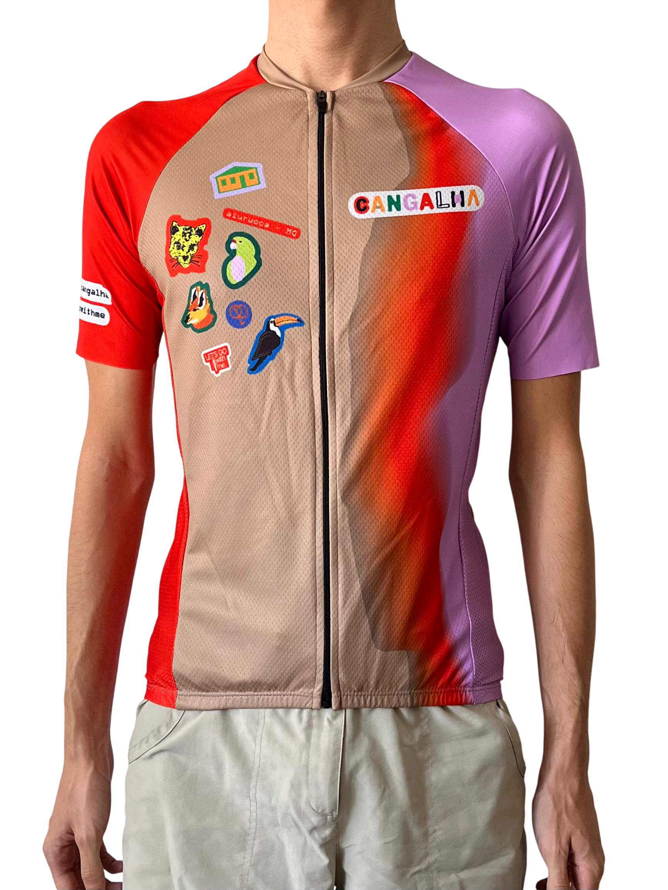
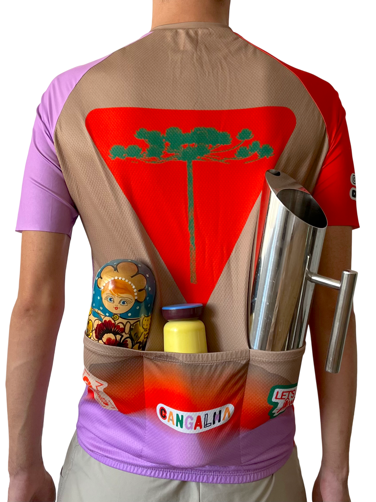
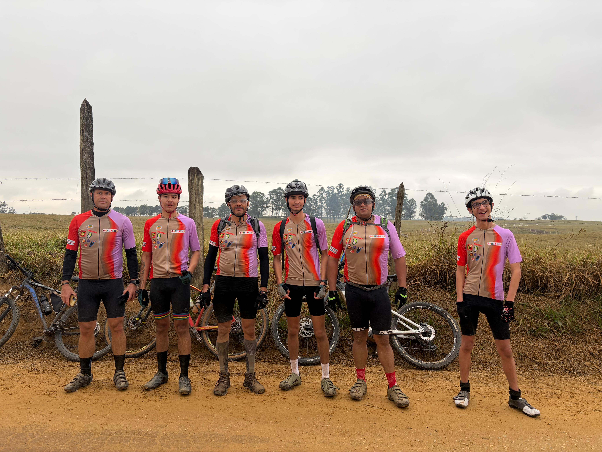
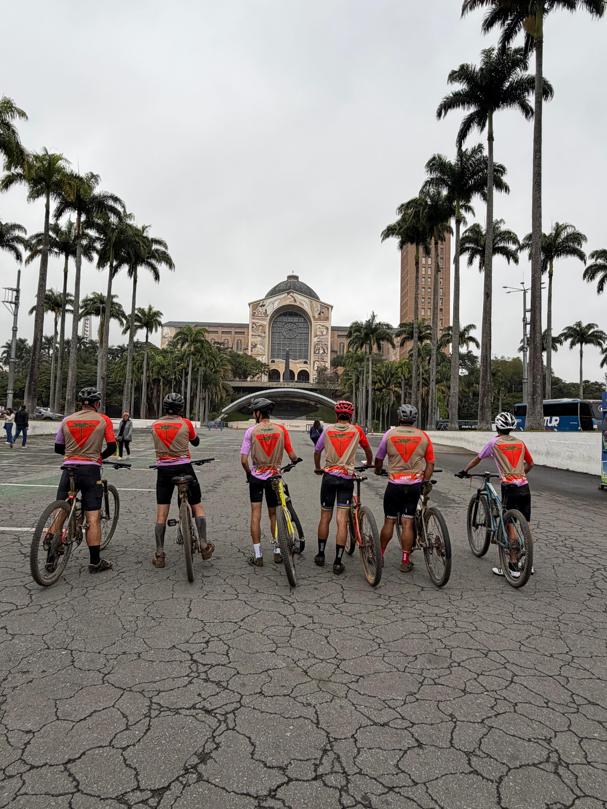

ciclo-cangalha — camisa de ciclismo
2026
camiseta de ciclismo desenvolvida para o Ciclo Gangalha, trilha que tem seu início no bairro rural de Cangalha, em Aiuruoca/MG.
disponível para compra na Casa Cangalha. Aiuruoca, Minas Gerais.



team
designers
Breno Samel @brenosamel
Teo Bressane-Sabadin @teobressanesabadin